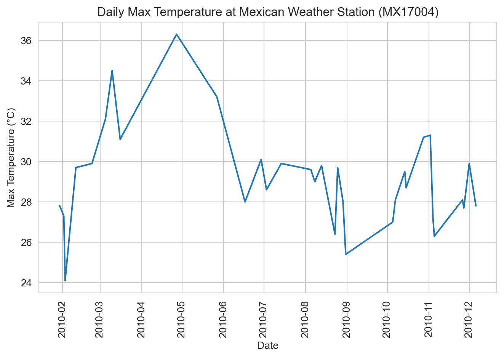
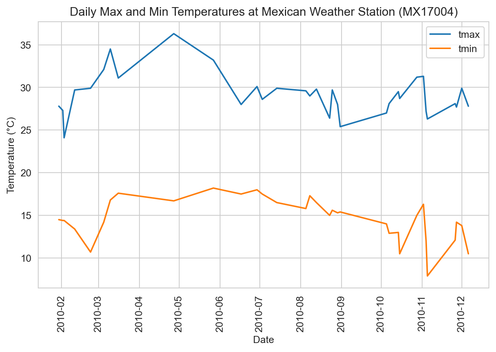
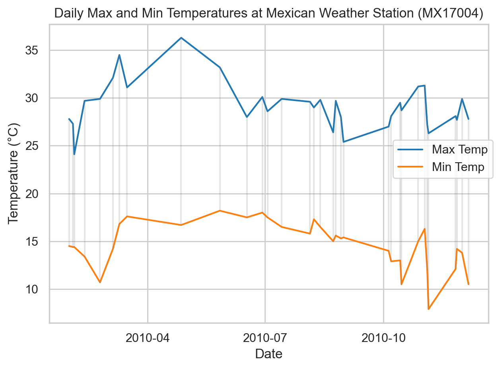

import numpy as np
import pandas as pd
from matplotlib import pyplot as plt
import seaborn as sns
sns.set_style("whitegrid")4 Data Wrangling with Python
Preparing data for analysis and visualization
Open the live notebook in Google Colab or download the live notebook.
We had previously introduced the term Data wrangling, broadly defined as transforming data from one form into another. It is sometimes used synonymously with “data cleaning”, i.e., preparing “messy” raw data for further analysis, but data wrangling can also refer the analysis itself (including data transformation, visualization, aggregation). We also encountered the more specific term “tidy data”, a standard way of organizing tabular data to facilitate analysis and visualization. Today we will focus on some of the tools and techniques for data transformation, and particularly the process of “data tidying”.
Most of the data we encounter in a class setting has already been “tidied”. But most real-world data is messy in one or more ways, for example (but not limited to):
- Missing data
- Duplicate data (check out Pandas’
drop_duplicates) - Improper or imprecise data types, e.g., dates stored as strings
- Inconsistently formatted data, e.g., phone numbers with different delimiters
- Untidy data, e.g., multiple data elements embedded in a single value
- Data stored in multiple tables that need to be joined
As Hadley Wickham noted, “Tidy datasets are all alike, but every messy dataset is messy in its own way.” (Wickham, Çetinkaya-Rundel, and Grolemund 2023) How we deal with these issues depends on the context and the analysis we want to perform. For example, we may need or want to drop rows with missing data, leave them as is, or even impute missing values based on other data. While there is no “one-size-fits-all” approach to tidying data, there are some common patterns and techniques. Those are our focus for today.
Let’s get started with our standard imports.
Missing data
Recall that in the Palmer Penguins dataset (Horst, Hill, and Gorman 2020), some rows have missing values for some or all measurements. Let’s reload the data and take a look at the rows with missing data.
url = "https://raw.githubusercontent.com/middcs/data-science-notes/main/data/palmer-penguins/palmer-penguins.csv"
df = pd.read_csv(url)
df[df.isna().any(axis=1)].head() # Show rows with any missing data| studyName | Sample Number | Species | Region | Island | Stage | Individual ID | Clutch Completion | Date Egg | Culmen Length (mm) | Culmen Depth (mm) | Flipper Length (mm) | Body Mass (g) | Sex | Delta 15 N (o/oo) | Delta 13 C (o/oo) | Comments | |
|---|---|---|---|---|---|---|---|---|---|---|---|---|---|---|---|---|---|
| 0 | PAL0708 | 1 | Adelie Penguin (Pygoscelis adeliae) | Anvers | Torgersen | Adult, 1 Egg Stage | N1A1 | Yes | 11/11/07 | 39.1 | 18.7 | 181.0 | 3750.0 | MALE | NaN | NaN | Not enough blood for isotopes. |
| 1 | PAL0708 | 2 | Adelie Penguin (Pygoscelis adeliae) | Anvers | Torgersen | Adult, 1 Egg Stage | N1A2 | Yes | 11/11/07 | 39.5 | 17.4 | 186.0 | 3800.0 | FEMALE | 8.94956 | -24.69454 | NaN |
| 2 | PAL0708 | 3 | Adelie Penguin (Pygoscelis adeliae) | Anvers | Torgersen | Adult, 1 Egg Stage | N2A1 | Yes | 11/16/07 | 40.3 | 18.0 | 195.0 | 3250.0 | FEMALE | 8.36821 | -25.33302 | NaN |
| 3 | PAL0708 | 4 | Adelie Penguin (Pygoscelis adeliae) | Anvers | Torgersen | Adult, 1 Egg Stage | N2A2 | Yes | 11/16/07 | NaN | NaN | NaN | NaN | NaN | NaN | NaN | Adult not sampled. |
| 4 | PAL0708 | 5 | Adelie Penguin (Pygoscelis adeliae) | Anvers | Torgersen | Adult, 1 Egg Stage | N3A1 | Yes | 11/16/07 | 36.7 | 19.3 | 193.0 | 3450.0 | FEMALE | 8.76651 | -25.32426 | NaN |
Notice that first row has values of NaN for the “Delta …” variables, indicating missing data, due to “Not enough blood isotopes” (as noted in the “Comments”). Recall from the reading that, NaN or “Not a Number”, is how Pandas represents missing or not-applicable numeric data. It is analogous to NA “not available” in R. For convenience (following McKinney (2022)), we will use NA to refer to missing data, regardless of the specific representation.
It is critical that we accurately represent missing data to ensure valid analyses. When loading data with read_* functions, Pandas will automatically convert certain values to NA, including empty cells, but we can also specify additional values to treat as missing. Doing so is very helpful when dealing with “bespoke” input files.
One challenge is that while NA is built into all aspects of the R language, Pandas needs to repurpose existing tools within Python (and NumPy) to handle missing data. NaN, for example, is a special floating-point value defined by the relevant design standards (it is not specific to Pandas). There is not an equivalent built-in sentinel value for integers. Thus to represent missing data in integer columns, Pandas will automatically convert the column to floating-point (perhaps to your surprise). Recent versions of Pandas have introduced “nullable” integer types that can represent missing data without converting to floating-point, but these are still marked as an experimental feature. For other types, Pandas might use the Python None value or the Pandas NaT “Not a Time” values to represent missing data.
The Pandas methods for detecting, removing or replacing missing data will generally handle these different cases transparently. For example, we can use dropna to drop rows or columns of different types with some or all missing data. But we need to be mindful of the details so we are not surprised by type coercion or the subtle behaviors of floating-point NaN values. For example, NaN != NaN, so we cannot use equality to comparing missing values.
a = pd.Series([1, 2, np.nan, 4])
b = pd.Series([1, 2, np.nan, 4])
print((a == b).all()) # False because NaN != NaN
print(a.equals(b)) # True because equals method treats missing specially
print(np.array_equal(a, b)) # False because np.array_equal because NaN != NaN
print(np.array_equal(a, b, equal_nan=True)) # Set NaN to compare equallyFalse
True
False
TrueExtended typing
In addition to type distinctions like integer vs. floating-point vs. string, Pandas supports more precise data types that can help with analyses. When a variable is discrete, i.e., can only take on a limited set of values, we can define it as a categorical variable (analogous to a factor in R or an enum in Python and other programming languages). As noted in the Pandas documentation, the categorical data types can offer several advantages, categorical types 1) can reduce memory usage by encoding strings as integers, 2) explicitly define the ordering of values, and 3) indicate that a variable is categorical to other tools (e.g., visualization libraries).
Managing categorical data is a common task when cleaning data. For example, imagine we had survey data that included a user-entered state variable. We could imagine values like “Vermont”, “Vermont”, “VT”, and “vt” all referring to the same state. We could use categorical data types to help standardize these values and ensure consistent analysis.
states = pd.Series(["Vermont", "Vermont", "VT", "vt", "California", "CA", "ca"])
pd.Categorical(states.str.upper())['VERMONT', 'VERMONT', 'VT', 'VT', 'CALIFORNIA', 'CA', 'CA']
Categories (4, object): ['CA', 'CALIFORNIA', 'VERMONT', 'VT']We observe we have multiple overlapping categories. We can use map and a dictionary to make the data consistent and then convert to a categorical variable (for example, with a specified set of categories to record there are more possible states than those observed).
state_map = { "VT": "VT", "VERMONT": "VT", "CA": "CA", "CALIFORNIA": "CA" }
pd.Categorical(states.str.upper().map(state_map), categories=["CA", "DC", "VT"])['VT', 'VT', 'VT', 'VT', 'CA', 'CA', 'CA']
Categories (3, object): ['CA', 'DC', 'VT']Often structured data like dates/times are stored as strings. But doing so make it difficult perform relevant comparisons or arithmetic. Pandas provides specialized date/time data types that facilitate working with temporal data. Where possible we should convert date/time data to these specialized types to facilitate analysis (e.g., how specific days are distributed through the year).
Untidy data
We point you to the reading (McKinney 2022) and other texts (Wickham, Çetinkaya-Rundel, and Grolemund 2023) for more detail on the different functions for data tidying. Here want to highlight some common cases and the associated tidying approaches:
- Multiple data elements in a value → split one column into several
- Data in the column labels, i.e., “wide” format data → “melt” data into “long” format
- Data spread across multiples rows, i.e., data is too long → “pivot” data to be wider
The following data on TB cases in different countries and years has the first two problems (Wickham, Çetinkaya-Rundel, and Grolemund 2023). Each value is a string with two data elements (the cases and population), and the year data is stored in the column labels. We can apply the first two techniques to make it tidy.
tb = pd.DataFrame({
"country": ["Afghanistan", "Brazil", "China"],
"1999": ["745/19987071" , "37737/172006362", "212258/1272915272"],
"2000": ["2666/20595360", "80488/174504898", "213766/1280428583"],
})
tb| country | 1999 | 2000 | |
|---|---|---|---|
| 0 | Afghanistan | 745/19987071 | 2666/20595360 |
| 1 | Brazil | 37737/172006362 | 80488/174504898 |
| 2 | China | 212258/1272915272 | 213766/1280428583 |
# Melt the data to long format by specifying the "id" variables to repeat, the new variable to create
# from the column labels, and the new variable to hold the values.
tb_long = tb.melt(id_vars="country", var_name="year", value_name="cases_pop")
tb_long| country | year | cases_pop | |
|---|---|---|---|
| 0 | Afghanistan | 1999 | 745/19987071 |
| 1 | Brazil | 1999 | 37737/172006362 |
| 2 | China | 1999 | 212258/1272915272 |
| 3 | Afghanistan | 2000 | 2666/20595360 |
| 4 | Brazil | 2000 | 80488/174504898 |
| 5 | China | 2000 | 213766/1280428583 |
# Now split the "cases_pop" column into two new integer columns, then remove the original
tb_long[["cases", "population"]] = tb_long["cases_pop"].str.split("/", expand=True).astype("int64")
tb_long = tb_long.drop(columns="cases_pop")
tb_long| country | year | cases | population | |
|---|---|---|---|---|
| 0 | Afghanistan | 1999 | 745 | 19987071 |
| 1 | Brazil | 1999 | 37737 | 172006362 |
| 2 | China | 1999 | 212258 | 1272915272 |
| 3 | Afghanistan | 2000 | 2666 | 20595360 |
| 4 | Brazil | 2000 | 80488 | 174504898 |
| 5 | China | 2000 | 213766 | 1280428583 |
The result is now tidy data, with one observation per row and one variable per column! In contrast, the following version of the data is “too long”, i.e., has problem 3. The observations for each country and year are spread across two rows. We use the pivot method to make the data wider.
Behind the scenes Pandas implements
pivot by creating and manipulating a hierarchical index, thus the reset_index call to convert the index back into columns.tb = pd.DataFrame({
"country": ["Afghanistan", "Afghanistan", "Afghanistan", "Afghanistan", "Brazil", "Brazil", "Brazil", "Brazil", "China", "China", "China", "China"],
"year": [1999, 1999, 2000, 2000, 1999, 1999, 2000, 2000, 1999, 1999, 2000, 2000],
"type": ["cases", "population", "cases", "population", "cases", "population", "cases", "population", "cases", "population", "cases", "population"],
"value": [745, 19987071, 2666, 20595360, 37737, 172006362, 80488, 174504898, 212258, 1272915272, 213766, 1280428583],
})
tb| country | year | type | value | |
|---|---|---|---|---|
| 0 | Afghanistan | 1999 | cases | 745 |
| 1 | Afghanistan | 1999 | population | 19987071 |
| 2 | Afghanistan | 2000 | cases | 2666 |
| 3 | Afghanistan | 2000 | population | 20595360 |
| 4 | Brazil | 1999 | cases | 37737 |
| 5 | Brazil | 1999 | population | 172006362 |
| 6 | Brazil | 2000 | cases | 80488 |
| 7 | Brazil | 2000 | population | 174504898 |
| 8 | China | 1999 | cases | 212258 |
| 9 | China | 1999 | population | 1272915272 |
| 10 | China | 2000 | cases | 213766 |
| 11 | China | 2000 | population | 1280428583 |
# "Pivot" type values to columns, inserting resulting index (county, year) back into the data frame
# as variables
tb_long = tb.pivot(index=["country", "year"], columns="type", values="value").reset_index()
tb_long| type | country | year | cases | population |
|---|---|---|---|---|
| 0 | Afghanistan | 1999 | 745 | 19987071 |
| 1 | Afghanistan | 2000 | 2666 | 20595360 |
| 2 | Brazil | 1999 | 37737 | 172006362 |
| 3 | Brazil | 2000 | 80488 | 174504898 |
| 4 | China | 1999 | 212258 | 1272915272 |
| 5 | China | 2000 | 213766 | 1280428583 |
Combining data
So far most of the data we have seen has been stored in a single DataFrame (or Series). But often data is spread across multiple DataFrames that need to be combined for analysis. Pandas provides several methods for combining data, including concatenation (stacking tables vertically or horizontally), various types of joins (merging tables based on common variables) and combination (update missing values from another DataFrame). See the Pandas documentation on merging, joining, and concatenating for more detail.
Database-style joins, combining DataFrames based on common variables, are implemented with the merge method. Some common situations where you might need to join data include:
- Combining data from multiple sources, especially data extracted from relational databases (RDBMS), which store data in multiple tables linked by common variables (keys)
- Annotating data with additional information, e.g., adding state populations to a dataset with state labels
One of the key decisions when merging data is the type of join/merge to perform. The most common types are:
- “inner”: Keep only rows with keys in both
DataFrames - “left” or “right”: Keep all rows from the left or right tables, combining data from the other table where keys match
- “outer”: Keep all rows from both tables, combining data where keys match
NoteWhat are examples of when you would use one type of join vs. another? (Try answering before expanding)
We might use an inner join when we only want data defined in both tables. Imagine we have table of gene mutations and a table of genes associated with diseases (not all genes are associated with diseases). An inner join would give us only the mutations in disease-associated genes. We would use a left or right join when we want to keep all data from one table, e.g., if we want to opportunistically annotate data, but not drop any. In our same genetics example, we might use a left join to annotate the mutations with disease associations, if available, but not drop any mutations.
Example: Weather data
The following data from the tidyr package documentation illustrates several of the data tidying techniques we have discussed. It contains daily temperature measurements from a weather station in Mexico. The variables are spread across both the rows and columns. The temperature minimum and maximum are stored in separate rows, while the different days are spread across the columns.
url = "https://github.com/tidyverse/tidyr/raw/refs/heads/main/vignettes/weather.csv"
weather = pd.read_csv(url)
weather.head()| id | year | month | element | d1 | d2 | d3 | d4 | d5 | d6 | ... | d22 | d23 | d24 | d25 | d26 | d27 | d28 | d29 | d30 | d31 | |
|---|---|---|---|---|---|---|---|---|---|---|---|---|---|---|---|---|---|---|---|---|---|
| 0 | MX17004 | 2010 | 1 | tmax | NaN | NaN | NaN | NaN | NaN | NaN | ... | NaN | NaN | NaN | NaN | NaN | NaN | NaN | NaN | 27.8 | NaN |
| 1 | MX17004 | 2010 | 1 | tmin | NaN | NaN | NaN | NaN | NaN | NaN | ... | NaN | NaN | NaN | NaN | NaN | NaN | NaN | NaN | 14.5 | NaN |
| 2 | MX17004 | 2010 | 2 | tmax | NaN | 27.3 | 24.1 | NaN | NaN | NaN | ... | NaN | 29.9 | NaN | NaN | NaN | NaN | NaN | NaN | NaN | NaN |
| 3 | MX17004 | 2010 | 2 | tmin | NaN | 14.4 | 14.4 | NaN | NaN | NaN | ... | NaN | 10.7 | NaN | NaN | NaN | NaN | NaN | NaN | NaN | NaN |
| 4 | MX17004 | 2010 | 3 | tmax | NaN | NaN | NaN | NaN | 32.1 | NaN | ... | NaN | NaN | NaN | NaN | NaN | NaN | NaN | NaN | NaN | NaN |
5 rows × 35 columns
We want to have one row per observation (i.e., one row per station and date) and one column per variable (i.e., “tmax”, “tmin”). To do so, we first “melt” the day columns (“d1”, “d2”, …) to lengthen the data, then “pivot” the “element” column to widen the data. In the process we will also drop missing temperature values. In this case we don’t lose any information by dropping missing values because we know how many days are in each month, and thus how much data we could have had.
# 1. Melt the day columns into a single "day" column with associated "temp" values
# 2. Drop missing temperature values
# 3. Pivot the "element" variable to columns (tmax, tmin)
weather_long = (weather
.melt(id_vars=["id", "year", "month", "element"], var_name="day", value_name="temp")
.dropna(subset=["temp"])
.pivot_table(index=["id", "year", "month", "day"], columns="element", values="temp")
.reset_index()
)
weather_long.head()| element | id | year | month | day | tmax | tmin |
|---|---|---|---|---|---|---|
| 0 | MX17004 | 2010 | 1 | d30 | 27.8 | 14.5 |
| 1 | MX17004 | 2010 | 2 | d11 | 29.7 | 13.4 |
| 2 | MX17004 | 2010 | 2 | d2 | 27.3 | 14.4 |
| 3 | MX17004 | 2010 | 2 | d23 | 29.9 | 10.7 |
| 4 | MX17004 | 2010 | 2 | d3 | 24.1 | 14.4 |
The “d” prefix in the “day” variable does not add any information, so we will strip it off and convert the variable to an integer type to make more useful for analysis (e.g., ensure correct sorting).
# 4. Remove the "d" prefix from the day variable and convert to integer
weather_long['day'] = weather_long['day'].str.lstrip("d").astype("int64")
weather_long.head()| element | id | year | month | day | tmax | tmin |
|---|---|---|---|---|---|---|
| 0 | MX17004 | 2010 | 1 | 30 | 27.8 | 14.5 |
| 1 | MX17004 | 2010 | 2 | 11 | 29.7 | 13.4 |
| 2 | MX17004 | 2010 | 2 | 2 | 27.3 | 14.4 |
| 3 | MX17004 | 2010 | 2 | 23 | 29.9 | 10.7 |
| 4 | MX17004 | 2010 | 2 | 3 | 24.1 | 14.4 |
We can go one step further and convert the year, month, and day columns into a single typed date variable. This will facilitate time series analysis and visualization (for example Seaborn, correctly spacing the days out across the year). We can use the pd.to_datetime function to do so (one of its possible arguments is a DataFrame with year, month, and day columns, in that order), then drop the original year, month, and day columns.
# 5. Convert year, month, day to a single typed date variable and drop the original columns
weather_long["date"] = pd.to_datetime(weather_long[['year', 'month', 'day']])
weather_long = weather_long.drop(columns=["year", "month", "day"])
weather_long.head()| element | id | tmax | tmin | date |
|---|---|---|---|---|
| 0 | MX17004 | 27.8 | 14.5 | 2010-01-30 |
| 1 | MX17004 | 29.7 | 13.4 | 2010-02-11 |
| 2 | MX17004 | 27.3 | 14.4 | 2010-02-02 |
| 3 | MX17004 | 29.9 | 10.7 | 2010-02-23 |
| 4 | MX17004 | 24.1 | 14.4 | 2010-02-03 |
With our tidy data in hand, we can now proceed with analysis and visualization. For example, we can plot the daily maximum temperatures over time. Notice that because we converted the date variable to a typed date, Seaborn automatically spaces the dates correctly along the x-axis.
ax = sns.lineplot(data=weather_long, x="date", y="tmax")
ax.set(xlabel="Date", ylabel="Max Temperature (°C)", title="Daily Max Temperature at Mexican Weather Station (MX17004)")
ax.tick_params(axis='x', labelrotation=90)
plt.tight_layout()
plt.show()
How would you modify this plot to also show the daily minimum temperatures as second trace? That is actually a subtle question in this instance. Putting those lines on the same plot implies that “tmin” and “tmax” are two different temperature observations for each date. In that interpretation, we would want to “melt” the data back to the original structure with “element” and “temp” columns, then map “element” to hue.
ax = sns.lineplot(
data=weather_long.melt(id_vars=["id", "date"], var_name="element", value_name="temp"),
x="date", y="temp", hue="element"
)
ax.set(xlabel="Date", ylabel="Temperature (°C)", title="Daily Max and Min Temperatures at Mexican Weather Station (MX17004)")
ax.tick_params(axis='x', labelrotation=90)
ax.legend(title=None)
plt.tight_layout()
plt.show()
That approach could be awkward if we had other variables, like precipitation, that can’t be readily be combined into the same “element” column. The Seaborn objects interface offers the fine grain control (more similar to R’s libraries, which are expressly designed around tidy data) to create multiple layers from the same data without further reshaping (i.e., continuing to treat “tmin” and “tmax” as separate variables). Here we do just that, while also showing the range on the specific dates for which we have data. The Seaborn objects interface is beyond the scope of this course, but is included here to illustrate the relationship between the plotting tools and how we structure our data.
import seaborn.objects as so
colors = sns.color_palette("tab10")
(so.Plot(data=weather_long, x="date")
.add(so.Line(color=colors[0]), y="tmax", label="Max Temp")
.add(so.Line(color=colors[1]), y="tmin", label="Min Temp")
.add(so.Range(alpha=0.2, color="gray"), ymin="tmin", ymax="tmax")
.label(x="Date", y="Temperature (°C)", title="Daily Max and Min Temperatures at Mexican Weather Station (MX17004)")
.theme(sns.axes_style("whitegrid"))
.show()
)
Horst, Allison M, Alison Presmanes Hill, and Kristen B Gorman. 2020. “Allisonhorst/Palmerpenguins: V0.1.0.” Zenodo. https://doi.org/10.5281/ZENODO.3960218.
McKinney, Wes. 2022. Python for Data Analysis. 3rd ed. O’Reilly Media. https://wesmckinney.com/book/.
Wickham, Hadley, Mine Çetinkaya-Rundel, and Garrett Grolemund. 2023. R for Data Science: Import, Tidy, Transform, Visualize, and Model Data. 2nd ed. O’Reilly Media. https://r4ds.hadley.nz/.
© Michael Linderman and Phil Chodrow, 2025-2026